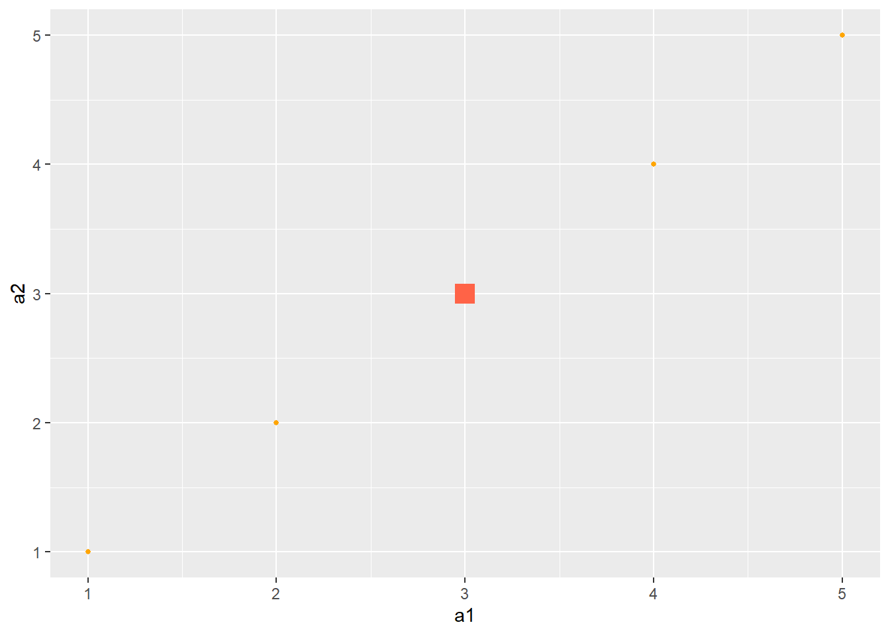
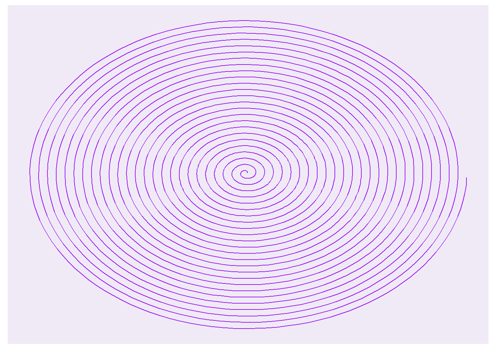
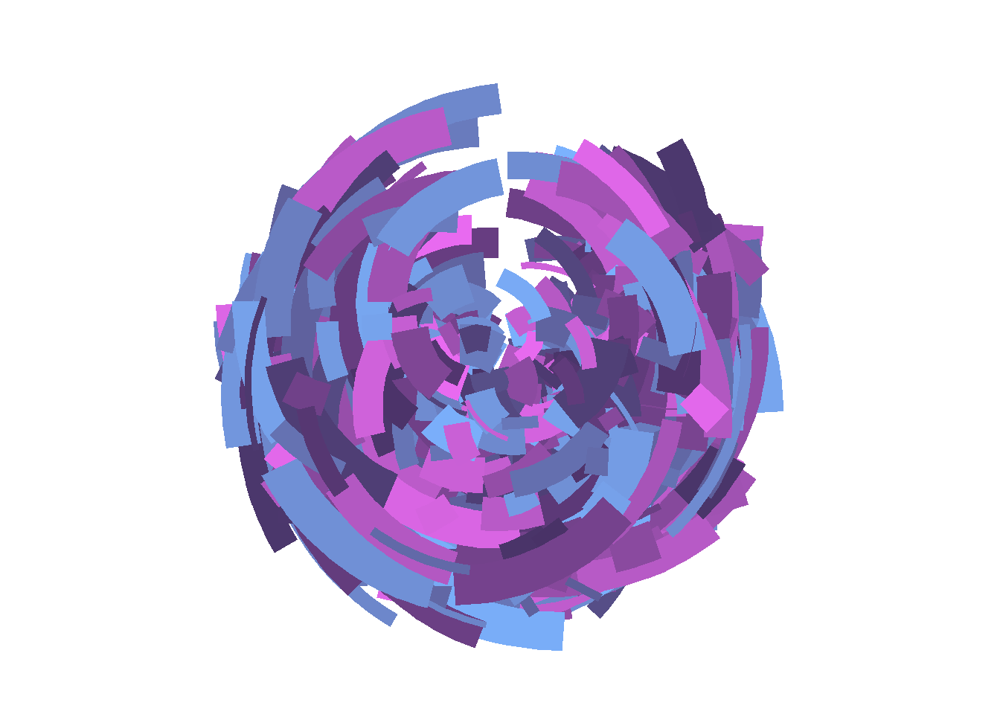
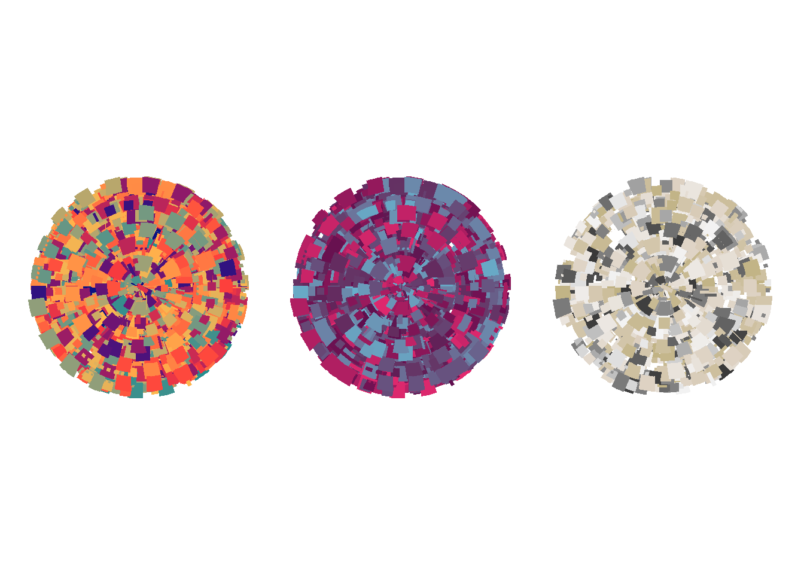
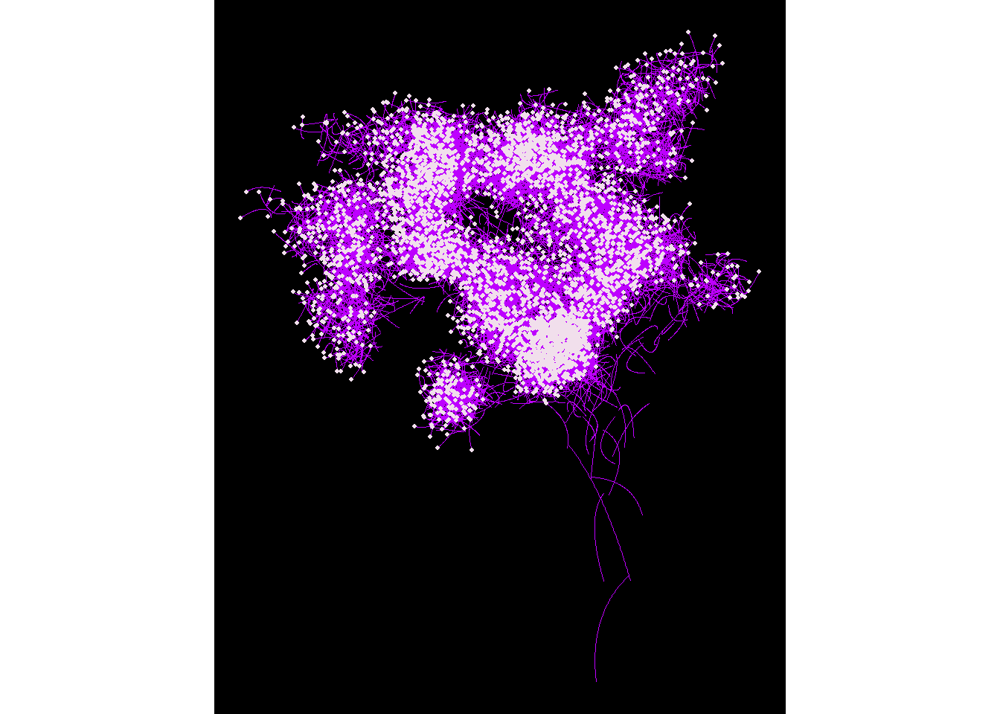
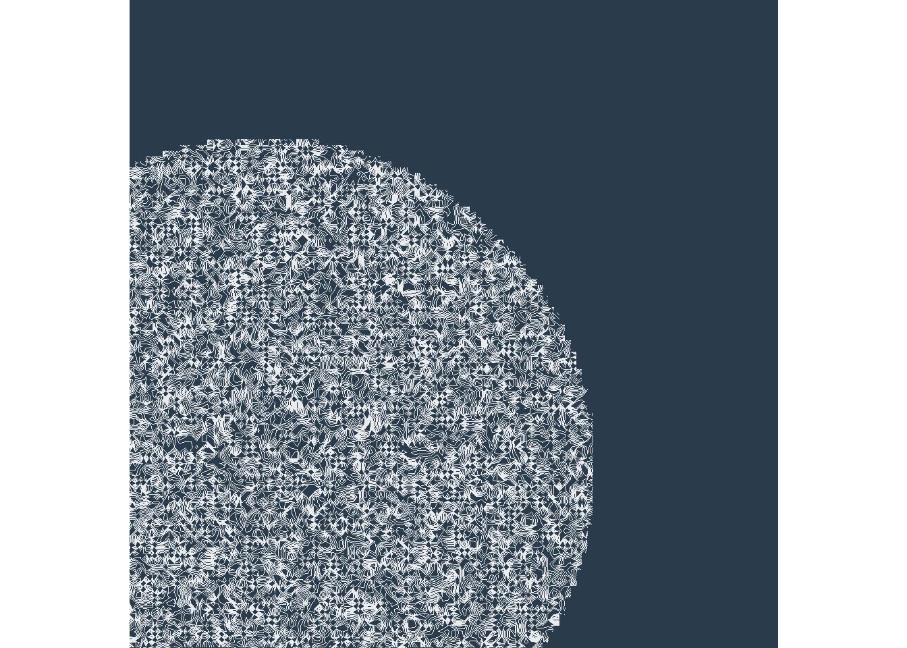

Ver código
library(tidyverse)
library(dplyr)
library(viridis)
library(ggplot2)El origen de este post como todo en la vida tiene que ver con una interrogación. Hace no tanto me pregunté qué se podía hacer con R más allá de nuestras tareas habituales y me puse a investigar hasta que un buen día me topé con la interesante idea-concepto-propuesta-intensión del denominado Arte Generativo, sobre el cual quiero compartir unas breves experiencias en forma de código.
El arte generativo, también conocido en la actualidad como arte algorítmico, es un tipo de expresión visual que puede ser recreada digitalmente, estableciendo un diálogo difuso entre los campos del arte y la programación.
A menudo un sentido común extendido asocia el arte al cauce de la expresión emocional de las personas, mientras que el acto de programar es emparentado a fríos códigos y lógicas pragmáticas que conducen a un resultado puntual. El arte generativo, creado por medio de algoritmos, tensa estas creencias siendo ambas cosas y ninguna de ellas. Pondremos aquí en juego herramientas rígidas y lógicas que crean algo asbtracto, impredecible e inesperado.
Es dable destacar que las bases de la propuesta estética fueron establecidas en el Manifiesto Arte Generativo(https://noticiasrecoleta.com.ar/el-arte-generativo-y-sus-60-anos-exposicion-de-obras-en-el-museo-de-arte-moderno/) por los artistas argentinos Eduardo Mac Entyre y Miguel Ángel Vidal ( foto ) donde se proclamaba el espacio como un campo abierto a las tensiones de formas orbitales, trayectorias proyectadas y planos fugados en profundidad.
")
Considero significativo adentrarse a este tema por su relevancia histórico-cultural, destacando además su dimensión práctica, toda vez que en el proceso de desarrollo de estos objetos, podemos experimentar e involucrarnos con diversas lógicas, formas y colores, una caja de herramientas distinta (pero no tanto) a la que habitualmente utilizamos en nuestra rutina laboral y que nos permite expandir creativamente nuestras habilidades al momento de visualizar fenómenos con R.
library(tidyverse)
library(dplyr)
library(viridis)
library(ggplot2)Para situarnos en el espacio que nos propone R, comenzamos haciendo algo que ya conocemos: un ggplot de puntos en un plano con colores y formas. En términos generales, esta es una de las lógicas subyacentes de la visualización y nos permite tomar una dimensión de las potencialidades de nuestras herramientas.
data <- data.frame(a1 = 1:5,# ej
a2 = 1:5)
ggplot(data, aes(a1, a2)) + # ggplot
geom_point(col = ifelse(1:nrow(data)==3,
"tomato", "orange"),
shape = ifelse(1:nrow(data)==3,15,16),
size = ifelse(1:nrow(data)==3,5,1))
Crearemos ahora un espiral de arquímedes para ver qué pasa con ggplot cuando vamos mas allá de las rectas:
# crea un fondo blanco para el grafico
opt = theme(legend.position = "none",
panel.background = element_rect(fill="#f0eaf7"),
axis.ticks = element_blank(),
panel.grid = element_blank(),
axis.title = element_blank(),
axis.text = element_blank())
# parametros
a <- 2
b <- 3
theta <- seq(0,50*pi,0.05)
r <- a + b*theta
df <- data.frame(x=r*cos(theta),
y=r*sin(theta)) #coord
#objeto ggplot
ggplot(df, aes(x,y)) +
geom_path(col='purple') +
opt
Luego de esta sucinta inmersión en la lógica de la visualización de elementos, indagaremos en las posibilidades que abren ggplot junto a dos paquetes que complementan las herramientas gráficas disponibles en R, y fueron desarrollados específicamente para la creación ( o producción?) de arte generativo y como veremos nos entregarán resultados más qué interesantes.
polar_art <- function(seed, n, palette) {
# semilla de generacion
set.seed(seed)
# data frame con valores random de
# aesthetics que elegimos
dat <- tibble(
x0 = runif(n),
y0 = runif(n),
x1 = x0 + runif(n, min = -.2, max = .2),
y1 = y0 + runif(n, min = -.2, max = .2),
shade = runif(n),
size = runif(n)
)
# grafica segmentos en varios colores,
# usando coordenadas polares y una paleta
dat |>
ggplot(aes(
x = x0,
y = y0,
xend = x1,
yend = y1,
colour = shade,
size = size
)) +
geom_segment(show.legend = FALSE) +
coord_polar() +
scale_y_continuous(expand = c(0, 0)) +
scale_x_continuous(expand = c(0, 0)) +
scale_colour_gradientn(colours = palette) +
scale_size(range = c(0, 10)) +
theme_void()
}
polar_art(seed = 1, n = 1000, palette = c("#e86af0", "#493267", "#7bb3ff"))
Repitamos para armar una secuencia con patchwork.
sample_data <- function(seed = NULL, n = 1000){
if(!is.null(seed)) set.seed(seed)
dat <- tibble(
x0 = runif(n),
y0 = runif(n),
x1 = x0 + runif(n, min = -.2, max = .2),
y1 = y0 + runif(n, min = -.2, max = .2),
shade = runif(n),
size = runif(n),
shape = factor(sample(0:22, size = n, replace = TRUE))
)
}
polar_styled_plot <- function(data = NULL, palette) {
ggplot(
data = data,
mapping = aes(
x = x0,
y = y0,
xend = x1,
yend = y1,
colour = shade,
size = size
)) +
coord_polar(clip = "off") +
scale_y_continuous(
expand = c(0, 0),
limits = c(0, 1),
oob = scales::oob_keep
) +
scale_x_continuous(
expand = c(0, 0),
limits = c(0, 1),
oob = scales::oob_keep
) +
scale_colour_gradientn(colours = palette) +
scale_size(range = c(0, 5)) +
theme_void() +
guides(
colour = guide_none(),
size = guide_none(),
fill = guide_none(),
shape = guide_none()
)
}
sample_canva <- function(seed = NULL) {
if(!is.null(seed)) set.seed(seed)
sample(ggthemes::canva_palettes, 1)[[1]]
}
dat <- sample_data(n = 1000, seed = 1) |>
mutate(y1 = y0, size = size / 10)
p1<-polar_styled_plot(palette = sample_canva(seed = 8)) +
geom_segment(data = dat, linetype = "1111")
p2<-polar_styled_plot(palette = sample_canva(seed = 10)) +
geom_segment(data = dat, linetype = "11112266")
p3<-polar_styled_plot(palette = sample_canva(seed = 500)) +
geom_segment(data = dat, linetype = "15")
library(patchwork)
p1+p2+p3
flametree provee un sistema de funciones y sistemas de trabajo orientados a crear arboles con código y fomentar la experimentación con este tipo de formas expresivas.
library(flametree)
# elegimos nuestros colores
shades <- c("#c79dd7", "#ef4f91", "#c5b9cd", "#abb1cf")
#ef4f91 (239,79,145)
#c79dd7 (199,157,215)
#4d1b7b (77,27,123)
# definimos los datos con los que se van a generar los arboles
dat <- flametree_grow(time = 10, trees = 10)
# graficamos
dat %>%
flametree_plot(
background = "antiquewhite",
palette = shades,
style = "nativeflora"
)
Veamos otro con una estética ciberpunk:
jittr <- function(coord_x, coord_y, id_tree, id_time) {
stats::runif(n = length(coord_x), min = -.2, max = .2)
}
flametree_grow(
time = 12,
seg_wid = spark_linear(constant = .2),
shift_x = jittr,
shift_y = jittr
) %>%
flametree_plot(
palette = c("#bd00ff", "#f1dfec"),
style = "wisp"
)
Se trata de un paquete para modelar formas en articulación con ggplot, si bien es limitado en funcionalidad, la propuesta de paquete se basa en la modidicación de parámetros para construir la imagen final.
library(contouR)
#set up your data
setup = contour_grid(grid_size = 100, point_dist = .25,
z_method = "runif", z = 10, z_span = 10) %>%
contour_shape(radius = 15,
x_center = 7, y_center = 9)
# plot your data
contour_plot(setup$grid_shape) +
ggplot2::xlim(1, 30) +
ggplot2::ylim(1, 30)
Se parece a un planeta hecho crochet no?
Si la broma te dió risa…¿Qué diferencia hay si fue creada por un algoritmo?” (Marcus du Sautoy, El código creativo )
Así comienza Artsy su blog y nos presenta una serie de funcionalidades para crear nuestro obra generativa de forma simple y al alcance de todos y todas. El paquete proporciona varios algoritmos para crear proyecciones ggplot que incorporan aleatoriedad (según la seed) y, de los 3 que vimos, es mi favorito, con lo cual me gustaría profundizar más en él.
Antes de comenzar a utilizar este paquete es importante saber que el mismo se organiza en colecciones, cada una genera un tipo de proyección o forma distinta.
La función canvas_strokes() permite, por ejemplo, simular el trazo de un pincel ejecutando un calculo de probablilidad en la que todos los puntos de la proyección tienen la probabilidad de adquirir el color del punto próximo, pero también incorpora una pequeña posibilidad de asumir un color distinto.
library(aRtsy)
set.seed(5)
#colores de la paleta de referencia.
#https://www.color-hex.com/color-palette/84832
canvas_strokes(colors =
c('#e8d0d9', '#e590a5',
'#75638b', '#507592',
'#dac291'),
neighbors = 1, p = 0.005,
iterations = 10,
#width = 500, height = 500,
side = FALSE)
Es el caso de canvas_squares, que utiliza una variedad de cuadrados y rectángulos en lugar de líneas. Funciona cortando repetidamente el lienzo en ubicaciones aleatorias y coloreando el área que crean estos cortes:
library(aRtsy)
set.seed(6)
canvas_squares(colors = c(
'#fac901', '#ffffff',
'#225095', '#dd0100'),
cuts = 50, ratio = 2.5,
#width = 100, height = 100
)
#paleta de referencia
#https://www.color-hex.com/color-palette/25374También resultan atractivas las proyecciones de canvas_ribbons() que mantiene la lógica anterior, pero utiliza cintas y triángulos conectados a través de nodos comunes.
set.seed(784)
canvas_ribbons(colors =
c('#CC102D',
'#E88514', '#FFFF28',
'#7DC62C', '#71C0DE',
'#634C8A'),
background = '#1c2117',
triangle = TRUE)
# referencia de la paleta
# https://www.schemecolor.com/the-dark-
# side-of-the-moon-pink-floyd-colors.php
# lo intente!Finalmente, la colección Supervised trabaja con funciones de agrupación supervisadas propias del machine learning. Los algoritmos de esta colección funcionan generando puntos de datos aleatorios en un plano bidimensional (con una variable de respuesta continua o categórica). Posteriormente la modelan utilizando el algoritmo de aprendizaje supervisado.
Para el caso concreto del cuadro de mosaicos que sigue operaremos de fondo con un algoritmo k means:
canvas_mosaic(colors =
c("#ff598f",
"#fd8a5e",
"#e0e300",
"#01dddd",
"#00bfaf"),
n = 25,resolution = 1000)
# paleta de referencia
# https://www.color-hex.com/color-palette/63466Esta fue una selección de experiencias y posibilidades experimentando con el denominado arte generativo en R, los códigos abiertos de este post y las referencias citadas invitan a lxs interesadxs a replicar-reconfigurar las imágenes propuestas.
Las primeras impresiones de quien escribe con respecto al arte generativo es que en tanto técnica expresiva estimula creativamente a indagar y conocer más sobre el procesamiento de imágenes y la proyección de datos en R.
En este sentido podremos afirmar que arte generativo es una interesante alternativa para quienes quieran programar recrativamente, explorar las posibilidades de formas, colores y espacios que tenemos a disposición en r, procastinar en horario de trabajo o estudio, crear objetos artísticos (eventualmente venderlos a precio justo, recomiendo indagar en que qué es un nft ), todas las anteriores o ninguna, pero siempre con el mismo sentimiento compartido: el amor al arte💜 .
@online{damiánorden2022,
author = {Pedro Damián Orden},
editor = {},
title = {Una Aproximación Al Arte Generativo Con {R}},
date = {2022-09-24},
langid = {en}
}